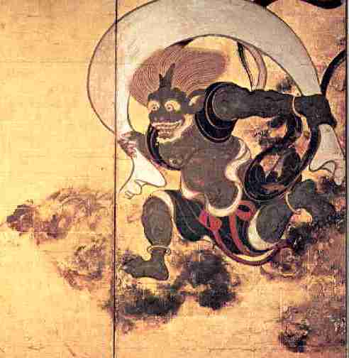

Before science enabled us to understand the phenomena of earth's environment, humankind struggled to explain the uncontrollable, magical, terrible, wondrous, destructive, sustaining, frightening, chaotic and often seemingly random forces of nature. While rain was often associated with life and fertility, thunderstorms were associated with power and might. Thunder and lightning were the domain of the most powerful sky gods such as the familiar Greek god Zeus, the Sumerian Ishkur and the Finnish Ukko. The wind was viewed by many ancient and native peoples as the work of fickle powers and understood to be the harbinger of change --- for good and ill.
Many civilizations worshipped wind deities --- often with separate gods and goddesses for each cardinal direction. In Greek mythology, the Anemoi, or the Winds, were the four sons of the dawn goddess, Eos, and the god of dusk, Astraeu. Boreas was the Greek god of the north wind called the cold breadth of winter while Notus was the Greek god of the south wind known as the god of summer rain storms. Zephyrus, the gentle west wind, was the most benevolent of the four and the only one that featured prominently in myth. Eurus was the Greek god of the east wind.
Many early civilizations similarly honored spirits or worshipped gods and goddesses of wind. Da-jo-ji was the Native American (Iroquois) mighty panther spirit of the west wind. Tilocayoti was the Aztec god of the east wind. Bieggolmai was the unpredictable Sami god of the summer winds and storms who used two shovels to shuffle the winds into and out of his cave. Feng Popo ("madam wind") was the Chinese goddess of the wind. She is usually depicted as an old woman riding through the clouds on the back of a tiger. The Greek god Aeolus was considered king of the winds. Since the winds were conceived of as horse-shaped spirits, Aeolus was titled Hippotades, "the reiner of horses," from the Greek hippos ("horse") and taden ("reined in tightly"). The Egyptian and Berber god of creation and the wind was Amun. The name of the pharaoh Tutankhamun (aka "King Tut") translates to, "the living image of Amun."
Some of the historical names of the wind deities have carried on into modernity and remains part of our 21st century lexicon. Habagat is the Philippine god of winds and rain who rules the kingdom of silver and gold in the sky. Contemporary use of the term in the Philippines refers to a weather system that is composed of warm and humid winds moving in a southwest direction associated with monsoon rains. Huracan was the Mayan god of wind, storms and fire and is considered to be the possible source of the word hurricane.
Other notable wind deities include:
Amihan: Tagalog and Visayan (Philippine) god of the cool, northeast wind.
Anitun Tabu: Tagalog (Philippine) goddess of wind and rain.
Aura: Greek Titan goddess of the breeze and the fresh, cool air of the early morning.
Aurae: Greek nymphs of the breezes.
Ba'al: Semitic (Ugaritic) god of lightning, wind, rain, and fertility.
Biegkegaellies: Sami god of winter winds and storms.
Buhawi: Tagalog (Philippine) god of whirlwinds and typhoons
Caicias: Greek god of the northeast wind.
Cihuatecayoti: Aztec god of the west wind.
Circios: Greek god of the north-northeast wind.
Also known as Thraskias.
Dogoda: Slavic god of quiet pleasant wind and clear weather.
Egoi: Basque god of the south wind.
Ehecatl: Aztec god of wind.
Enlil: Sumerian god of air and storms (means "lord of the storm or wind").
Erebos: Greek god of the south-east wind.
Euronotus: Greek god of the southwest wind.
Eurus: Greek god of the east wind.
Favonius: Roman god of the west wind (although the Romans often used the Greek Zephr in poetry).
Fei Lian: Chinese (Taoist) god of wind. Human form is Feng Bo.
Fujin: Japanese god of the wind. One of the eldest Shinto gods.
Gaoh: Iroquois spirit master of the winds.
Guabancex: Native American (Taino) storm goddess ("Lady of the Winds")
Harpyiai: Greek Daimons of whirlwinds and storm gusts.
Hotoru: Pawnee wind god
Kahit: Native American (Kahit) wind god.
Kaikias: The Greek god of the north-east wind.
Kon Incan god of rain and wind.
Lihangin: Visayan (Philippine) god (king) of the winds.
Linamin at Barat: Goddess of monsoon winds in Palawan.
Lips: The Greek god of the southwest wind.
Menuo: Lithuanian god of the east wind.
Mictianpachecati: Aztec god of the north wind.
Negafook: Inuit god of weather systems --- represents the north wind.
Ne-o-gah: Native American (Iroquois) gentle fawn spirit of the south wind.
Niltsi: Native American (Navajo) wind god.
Ninlil: Sumerian (Mesopotamian) goddess of the wind. Consort of Enlil.
Njoror: Norse god of the wind and sea.
Notus: Greek god of the south wind known as the god of summer rain storms.
Novensiles: Nine Roman gods of lightning.
Nuada: Celtic god of sky, wind, and war.
Welsh equivalent is Nudd or Lludd Llaw Eraint.
Oonawith Unggi: Native American (Cherokee) ancient spirit of the wind.
Oya: Yoruban deity of winds, lightning and violent storms.
O-yan-do-ne: The moose spirit of the east wind.
Pauahtuns: Mayan wind gods. Also referred to as Bacabs.
Pazuzu: Assyrian and Babylonian demon of the southwest wind.
Perun: Slavic god of thunder, lightning and wind.
He carries a mighty axe and is the highest god of the Slavic pantheon.
Pietys: Lithuanian god of the south wind.
Qebui: Egyptian god of the north wind. Appears as a ram with four heads.
Q'ug'umatz: Mayan god of wind and rain.
Quetzalcoatl: Aztec god of wind.
Rudra: Vedic wind or storm god.
Rytys: Lithuanian god of the east wind.
Shinatsuhiko: Japanese goddess of wind. Also called Shinatobe.
Shu: Egyptian god of the wind and air.
Siaurys: Lithuanian god of the north wind.
Silla: Native American (Inuit) god of the sky, wind and the weather. Also called Silap Inua.
Skiron: Greed god of the north-west wind.
Stribog: Slavic god and spirit of the winds, sky and air.
Szelatya: Hungarian god of wind. Also Szelkiraly or Yet Ata.
Tate: Native American (Lakota) wind god or spirit.
Tawhiri: Maori (ancient New Zealand) god of weather including thunder, lightning, wind, clouds, and storms. Also spelled Tawhirimatea.
Tezcatlipoca: Aztec god of hurricanes and night wind.
Tialocayoti: Aztec god of the east wind.
Vakaris: Lithuanian god of the west wind.
Varpulis: Slavic god of storm winds. Companion of Perun. Sometimes equated with Erishvorsh.
Varuna: Hindu god of the sky.
Vayu-Vata: Avestan (Persian) wind god.
Venti: Roman wind gods who were each ascribed a cardinal direction from which the winds blew. Correspond to Greek Anemoi.
Vitzlampaehecati: Aztec god of the south wind.
Wayra Tata: Puruha Quechuas (and Aymaras) god associated with hurricane winds and fertilizing rains. Also spelled Huayra-tata.
Waziya: Native American (Lakota) giant of the north winds. Guards the aurora borealis. Controls ice and snow.
Wiyohipeyata: Native American (Lakota) god or spirit of the west winds.
Wiyohiyanpa: Native American (Lakota) god or spirit of the east winds.
Yaponcha: Native American (Hopi) wind god.
Ya-o-gah: Native American (Iroquois) destructive bear spirit of the north wind.
Zephyrus: Greek god of the west wind known as the god of spring breezes.
Note: This article does not comprise original scholarly work. It is presented as a curiosity for the weather enthusiast as a compilation of publicly available information on the internet.